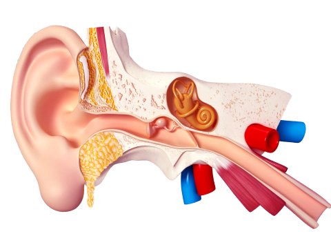
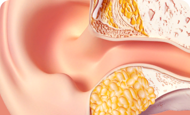
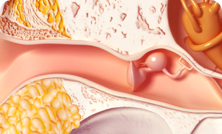
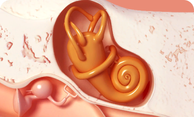

Постоянно переспрашивает в разговоре, что ему
сказали
Строение уха
Ухо делится на 3 части: наружное ухо, среднее и внутреннее
ухо

Внутреннее
В связи с его замысловатой формой называют улиткой
или лабиринтом. В нем находится лимфатическая
жидкость, 20 000 микроскопических сенсорных клеток,
соединенных волосками слухового нерва.
Звук попадает в улитку вызывая колебания
жидкости, волоски реагируют движениями и порождают
нервные импульсы. Импульсы посылают в мозг сигнал,
где они интерпретируются как звуки которые мы
слышим.
Наружное
Наружное ухо это видимая часть органа - ушная
раковина и слуховой проход. Возможно вы не знали тот
факт, что ушная раковина имеет завитки и
возвышенности не просто так, изгибы хряща помогают
улучшать качество звука, делают его более громким и
направляют звуковые волны четко в слуховой проход до
барабанной полости среднего уха.
Наружное ухо подвержено проникновению
инфекций развития воспаления (отита). Хронические
отиты причина потери остроты слуха, в запущенных
стадиях до полной глухоты.
Среднее
За барабанной перепонкой заполненная воздухом
полость, внутри нее расположены три слуховые
косточки, которые соединены между собой в цепочку,
имеющие причудливые названия: молоточек, наковаленка
и стремечко.
Эти элементы тесно связаны с носом и горлом, поэтому
при гриппе и ОРВИ часто болезнь переходит в острый
отит среднего уха.
Строение уха
Ухо делится на 3 части: наружное ухо, среднее и внутреннее
ухо

Повреждено наружное ухо
Звук не может пройти через слуховой проход и не
достигает барабанной перепонки
Причины
Серная пробка
Наружный отит (Воспаление)

Повреждено среднее ухо
Звук проходит через слуховой проход и достигает
барабанной перепонки, но не может пройти без
искажений до внутреннего уха
Причины
Воспаление барабанной перепонки
Нарушение работы слуховых косточек

Повреждено внутреннее ухо
Сенсорные клетки, которые превращают
механические колебания звуковой волны в
электрический импульс перестают работать
правильно
Внимание!
САМОЕ ОПАСНОЕ ПОВРЕЖДЕНИЕ ЛЕЧЕНИЕ НУЖНО НАЧИНАТЬ
НЕ ПОЗДНЕЕ МЕСЯЦА ПОСЛЕ НАЧАЛА БОЛЕЙ В УХЕ ИЛИ
ПОТЕРИ СЛУХА
Что говорят врачи?
Мартинюк Григорiй Вiталiйович
Кандидат медицинских наук
Прежде чем обратиться за помощью к хирургу или
попрощаться со звуками и надеть слуховой аппарат, я
рекомендую заняться общеукрепляющими мерами для
организма. Ларинорм я назначаю, когда вижу, что
пациент страдает частыми отитами, это показатель
общей слабости иммунитета, первый звоночек, что в
будущем будут серьезные проблемы со слухом. Ларинорм
помогает при отитах разного генеза, тугоухости,
травмах уха в период восстановления, отосклероза и
других патологий. Те, кто страдал частыми отитами,
забывают о них.
Как в дополнение к
Ларинорму, я рекомендую наладить рацион питания,
добавлять продукты, улучшающие остроту зрения. Если
пациент соблюдает все рекомендации, у него
восстанавливается слух.
Мартиненко Борис Вiталiйович
Ведущий отоларинголог в «Городская
клиническая больница №9» в г. Киев
Потеря слуха — это не обособленная проблема, она
может быть вызвана общим ослаблением организма.
Истощенный человек может оставаться слышащим, терять
нюх, но реже. В основном люди теряют зрение или
слух. Те, кто долго игнорировал, приходят ко мне с
тяжелой патологией, готовые надеть слуховой аппарат,
но я даю организму шанс восстановиться и назначаю
Ларинорм. Одеть слуховой аппарат никогда не поздно,
а поправить слух, второго шанса не будет.
Ларинорм восстанавливает ресурсы
организма, в нем содержится общеукрепляющие и
компоненты, улучшающие остроту зрения. Ларинорм
быстро усваивается организмом, поэтому курс 2-6
недель в зависимости от тяжести патологии. Я
рекомендую пить Ларинорм натощак за 20 минут до еды
для лучшего усвоения.
Чем лечить наши уши?
Само пройдет
Слух может безвозвратно быть потерян. Пуская на
самотек один из важных органов восприятия мира, вы
теряете связь с ним навсегда. Не лечить заболевания
уха — значит быть согласным принять факт неминуемой
глухоты. 7-10% населения земного шара – 500-700 млн.
человек имеют проблемы со слухом, цифра постоянно
растет. Заболевания уха коварны, тот же отит
провоцирует спайки в барабанной полости, развивается
стойкая тугоухость.
Не леченные болезни уха заканчиваются потерей слуха
и сожалением о своем авось. Ведь слух важнейший из
органов чувств который дан нам слышать и
взаимодействовать с миром.
Чем лечить наши уши?
Ларинорм
К счастью на сегодня глухоту, шум в ушах и другие
патологии можно вылечить. Ларинорм помогает
организму восстановить поврежденные волосковые
клетки, решая первую и самую серьезную причину
потери слуха. Оказывает влияние на нервные импульсы,
улучшает нейросенсорные связи, от получения звука до
посылаемых импульсов в мозг. Улучшает физические
показатели всего организма и нервной системы,
повышает остроту слуха для правильного восприятия
звуков.
Чем лечить наши уши?
Народная медицина
Никогда нельзя заниматься самолечением, ни один
народного метода не имеет доказательной
эффективности и даже может навредить.
Прогревание уха и заливание в него «полезных»
настоев может ускорить процесс потери слуха, есть
шанс заработать дополнительный шум.
Сегодня вы еще можете расслышать голос родных людей
и насладиться любимой песней, а завтра вы еле
слышите, как к вам подошли из-за спины.
Отзывы обычных людей, которые помогли родным
Коштун Богдан
Киев
Дорошенко Ірина
Харьков
Борисенко Олена
Львов
Буду продолжать пить Ларинорм курсами, это
реально работает!
Любая простуда, переохлаждение или грипп,
сильнейший отит переходящий в хронику, это про
меня. Каждый раз я вылечивал его, долго и
муторно, с помощью антибиотиков. Но полностью
излечить слабое ухо мне помог Ларинорм. Врач мне
сказал, что уши мое слабое место, и если не
решить проблему сейчас, я могу терять слух, в
старости стать глухим.
Я не раздумывая начал пить Ларинорм, пропил 6
недель, и забыл. Недавно слег с ОРВИ и ура у
меня не было осложнения на ухо. Буду продолжать
пить Ларинорм курсами, это реально работает!
Ларинорм нигде не купить, раскупают быстро, я
понимаю почему.
После перенесенного ковида, меня частенько
просили, чтобы я убавил музыку в машине, сначала
я не обращал на это внимания, молча убавлял. И
как-то заметил, что я включаю громкость на 25!!!
Начал проверять себя, одел наушники и такая же
фигня, чтобы услышать хорошо музыку пришлось
врубить на всю. С моим слухом началась беда…
Я побежал в поликлинику, врач сказал
восстановиться, нужно время, прописал витамины и
отправили домой. Прошло полгода, но острота
слуха только падала, полгода большой срок! Я
решил не тратить время и поехал в Астану к
одному из самых лучших ЛОРов, вот он мне и
прописал Ларинорм. Всего за 1 курс я стал
нормально слышать. Проверял по громкости
магнитолы, снова на 9-ке, 25 оглушает не
по-детски. Ларинорм нигде не купить, раскупают
быстро, я понимаю почему.
Это было так необычно, кто терял и
восстанавливал слух меня поймет.
Я заметила свою тугоухость, когда начала часто
доставать людей переспросами. Я стояла с
человеком нос к носу в полной тишине и
переспрашивала что он сказал, а если мы шли по
улице это был полный провал. Признаюсь, я сама
довела себя до такого состояния, более 2 лет я
не снимала наушники, могла даже уснуть в них и
проснуться с музыкой в ушах.
Тогда
меня это забавляло, и я романтизировала музыку
во сне. Мне помог Ларинорм, одним курсом мне
отделаться не получилось, но на 3й месяц приема
я почувствовала облегчение. Я слышала коллег на
планерке, смело отвечала без дурацких
переспросов, слышала людей, сидящих в кафе, это
было так необычно, кто терял и восстанавливал
слух меня поймет.